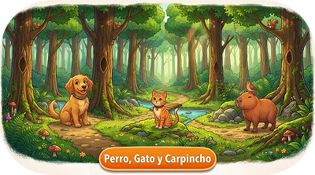
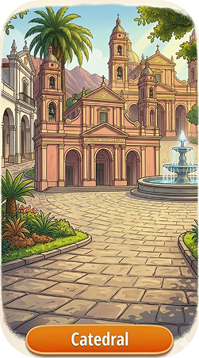

La Galería reúne imágenes y videos del Lenguaje de Señas Argentina para apoyar el aprendizaje
visual. Permite explorar señas en contexto y facilita una comprensión más clara y práctica,
acercando la LSA a todos los visitantes.


Instagram: manosquehablan_ok
Por Whatsapp al numero: 387 039 9777